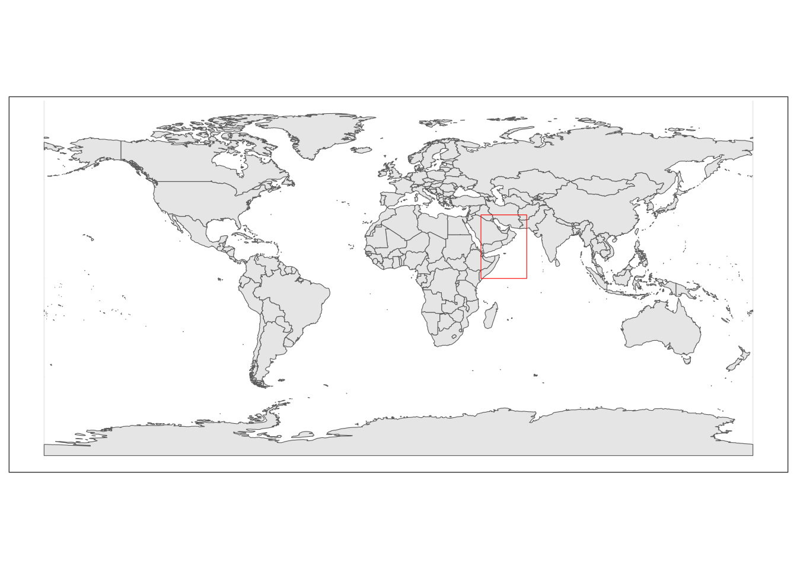
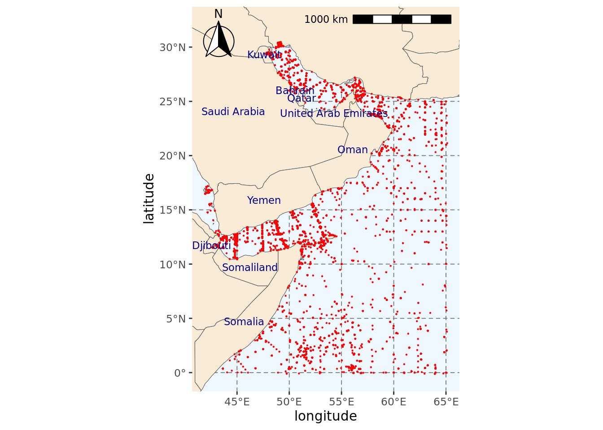

#Deal with spatial data
library(sf)
#Base maps and plotting spatial data
library(rnaturalearth)
library(mapview)
library(raster)
#Data visualisation and manipulation
library(tidyverse)
#Find files easily
library(here)
#Access to OBIS
library(robis)
#SDM
library(sdmpredictors)
library(dismo)
library(ggspatial)Getting background data from OBIS
In this notebook, we will explore three approaches to create background samples, aka pseudo absences. These are points where turtles were not recorded. These absences are needed for our choice of species distribution model algorithm. “Absences” does not mean that turtle could not be sighted here but that we have no records at these locations, either because we didn’t look or looked and didn’t see them.
These three approaches are as follows:
- Get occurrences for marine species from OBIS using the robis package, and use their locations as the locations for absences. - Select random locations using gridded environmental data as a base for our sampling.
- Select random locations using a polygon drawn around our presence locations.
In both cases, points will be constrained to fit within our area of interest.
Loading libraries
Set-up
Setting base directories
These directories contain the biological data (i.e., presence locations of loggerhead sea turtles) and environmental data.
#Setting directories containing input data
dir_data <- file.path(here(), "data/raw-bio")
dir_env <- file.path(here(), "data/env")Loading bounding box for region of interest
In the 01_Presence_Data notebook, we created a bounding box for our region of interest. We will load this bounding box here to spatially constrain our data.
#Loading bounding box for the area of interest
extent_polygon <- read_sf("../data/BoundingBox.shp")
#Extract polygon geometry
pol_geometry <- st_as_text(extent_polygon$geometry)Plotting region of interest
This allows us to check our polygon of interest is located in the correct region.
#Getting base map
world <- ne_countries(scale = "medium", returnclass = "sf")
#Plotting map
ggplot() +
#Adding base map
geom_sf(data = world) +
#Adding bounding box
geom_sf(data = extent_polygon, color = "red", fill = NA)+
#Setting theme of plots to not include a grey background
theme_bw()
Our bounding box is definitely in the region we are interested in. We will use this bounding box to filter out presence data from OBIS.
Approach 1: Use other species
In this approach we use other marine species presence locations as our locations for our background samples.
Getting occurrence data from OBIS
We will use robis to get observations for marine species from OBIS within our bounding box. OBIS data includes about 100 different columns, but not all of these columns are relevant to us. We will define the columns that we need and then we will perform a search of the OBIS database.
Defining relevant columns
cols.to.use <- c("scientificName", "dateIdentified", "eventDate", "decimalLatitude", "decimalLongitude", "coordinateUncertaintyInMeters", "bathymetry", "shoredistance", "sst", "sss")Querying OBIS
By setting the wrims parameter to TRUE we include observations of species registerd in the World Register of Introduced Marine Species (WRiMS).
#Applying bounding box and including WRiMS species
background <- occurrence(geometry = pol_geometry, wrims = TRUE,
#DNA data is not needed, subsetting columns of interest
dna = FALSE, fields = cols.to.use,
#Excluding records labelled as being on land
exclude = "ON_LAND")
Retrieved 5000 records of approximately 20428 (24%)
Retrieved 10000 records of
approximately 20428 (48%)
Retrieved 15000 records of approximately 20428
(73%)
Retrieved 20000 records of approximately 20428 (97%)
Retrieved 20428
records of approximately 20428 (100%)Saving background data
#Setting full file path to save background information
file_path_out <- file.path(dir_data, "io-background.csv")
#Saving background data as csv
write_csv(background, file_path_out)(Optional) Load background data
If you have previously downloaded the background data, you can simply load the data to the environment instead of downloading it again. To do this, you can use the code below.
#Find background file in our biological data folder
file_path_bg <- list.files(dir_data, pattern = "background", full.names = TRUE)
#Load file
background_1 <- read_csv(file_path_bg)Plotting background data
We will create a map with all the observations we obtained from OBIS within our region of interest.
#Extracting labels for countries in base map
world_points <- world %>%
st_make_valid(world) %>%
#Getting centroids for all polygons in the world base map
st_centroid(geometry) %>%
#Getting coordinates for each centroid
st_coordinates() %>%
#Adding centroids to original base map
bind_cols(world)Warning in st_centroid.sf(., geometry): st_centroid assumes attributes are
constant over geometries of x#Saving map into variable
plt <- ggplot()+
#Add world base map and change land colour
geom_sf(data = world, fill = "antiquewhite")+
#Add background points
geom_point(data = background,
#Point to coordinates for background points
aes(x = decimalLongitude, y = decimalLatitude),
#Changing color and size of points for background data
color = "red", size = 0.1)+
#Decrease map limits to focus on area of interest
lims(x = c(st_bbox(extent_polygon)$xmin, st_bbox(extent_polygon)$xmax),
y = c(st_bbox(extent_polygon)$ymin, st_bbox(extent_polygon)$ymax))+
#Add scale bar on the top right of the plot
annotation_scale(location = "tr", width_hint = 0.5)+
#Add north arrow on the top left of plot
annotation_north_arrow(location = "tl", which_north = "true",
#Include small buffer from plot edge
pad_x = unit(0.01, "in"), pad_y = unit(0.05, "in"),
#Set style of north arrow
style = north_arrow_fancy_orienteering) +
#Changing color, type and size of grid lines
theme(panel.grid.major = element_line(color = gray(.5), linetype = "dashed", size = 0.5),
#Change background of map
panel.background = element_rect(fill = "aliceblue"))Warning: The `size` argument of `element_line()` is deprecated as of ggplot2 3.4.0.
ℹ Please use the `linewidth` argument instead.#Do not use spherical geometry
sf_use_s2(FALSE)Spherical geometry (s2) switched off#Adding labels to map
plt <- plt+
geom_text(data = world_points,
#Point to coordinates and column with country names
aes(x = X, y = Y, label = name),
#Changing color and size of labels
color = "darkblue", size = 3,
#Avoid label overlap
check_overlap = TRUE) +
#Change axes labels
labs(x = "longitude", y = "latitude")
#Checking final map
pltScale on map varies by more than 10%, scale bar may be inaccurateWarning: Removed 231 rows containing missing values (`geom_text()`).
As you can see from the map above, this approach is not truly random. This is why we are including a second method to create background samples.
Approach 2. Random points in our region
This section has been adapted from this online tutorial.
Loading raster layer for area of interest
We need to load a raster layer so we can have a sample grid from where we can generate random points for our background samples.
Environmental data is downloaded using the sdmpredictors library.
#Set default directory for environmental data
options(sdmpredictors_datadir = dir_env)
#Getting datasets available through sdmpredictors
list_datasets(terrestrial = FALSE, marine = TRUE) dataset_code terrestrial marine url
2 Bio-ORACLE FALSE TRUE https://bio-oracle.org/
3 MARSPEC FALSE TRUE http://marspec.org/
description
2 Bio-ORACLE is a set of GIS rasters providing geophysical, biotic and environmental data for surface and benthic marine realms at a spatial resolution 5 arcmin (9.2 km) in the ESRI ascii and tif format.
3 MARSPEC is a set of high resolution climatic and geophysical GIS data layers for the world ocean. Seven geophysical variables were derived from the SRTM30_PLUS high resolution bathymetry dataset. These layers characterize the horizontal orientation (aspect), slope, and curvature of the seafloor and the distance from shore. Ten "bioclimatic" variables were derived from NOAA's World Ocean Atlas and NASA's MODIS satellite imagery and characterize the inter-annual means, extremes, and variances in sea surface temperature and salinity. These variables will be useful to those interested in the spatial ecology of marine shallow-water and surface-associated pelagic organisms across the globe. Note that, in contrary to the original MARSPEC, all layers have unscaled values.
citation
2 Tyberghein L., Verbruggen H., Pauly K., Troupin C., Mineur F. & De Clerck O. Bio-ORACLE: a global environmental dataset for marine species distribution modeling. Global Ecology and Biogeography. doi: 10.1111/j.1466-8238.2011.00656.x
3 Sbrocco, EJ and Barber, PH (2013) MARSPEC: Ocean climate layers for marine spatial ecology. Ecology 94: 979. doi: 10.1890/12-1358.1We will use the MARSPEC dataset to get some environmental data. We will now check what layers are available there.
list_layers("MARSPEC") dataset_code layer_code
69 MARSPEC MS_bathy_5m
70 MARSPEC MS_biogeo01_aspect_EW_5m
71 MARSPEC MS_biogeo02_aspect_NS_5m
72 MARSPEC MS_biogeo03_plan_curvature_5m
73 MARSPEC MS_biogeo04_profile_curvature_5m
75 MARSPEC MS_biogeo05_dist_shore_5m
76 MARSPEC MS_biogeo06_bathy_slope_5m
77 MARSPEC MS_biogeo07_concavity_5m
78 MARSPEC MS_biogeo08_sss_mean_5m
79 MARSPEC MS_biogeo09_sss_min_5m
80 MARSPEC MS_biogeo10_sss_max_5m
81 MARSPEC MS_biogeo11_sss_range_5m
82 MARSPEC MS_biogeo12_sss_variance_5m
83 MARSPEC MS_biogeo13_sst_mean_5m
84 MARSPEC MS_biogeo14_sst_min_5m
85 MARSPEC MS_biogeo15_sst_max_5m
86 MARSPEC MS_biogeo16_sst_range_5m
87 MARSPEC MS_biogeo17_sst_variance_5m
88 MARSPEC MS_sss01_5m
89 MARSPEC MS_sss02_5m
90 MARSPEC MS_sss03_5m
91 MARSPEC MS_sss04_5m
92 MARSPEC MS_sss05_5m
93 MARSPEC MS_sss06_5m
94 MARSPEC MS_sss07_5m
95 MARSPEC MS_sss08_5m
96 MARSPEC MS_sss09_5m
97 MARSPEC MS_sss10_5m
98 MARSPEC MS_sss11_5m
99 MARSPEC MS_sss12_5m
100 MARSPEC MS_sst01_5m
101 MARSPEC MS_sst02_5m
102 MARSPEC MS_sst03_5m
103 MARSPEC MS_sst04_5m
104 MARSPEC MS_sst05_5m
105 MARSPEC MS_sst06_5m
106 MARSPEC MS_sst07_5m
107 MARSPEC MS_sst08_5m
108 MARSPEC MS_sst09_5m
109 MARSPEC MS_sst10_5m
110 MARSPEC MS_sst11_5m
111 MARSPEC MS_sst12_5m
name
69 Bathymetry
70 East/West aspect
71 North/South Aspect
72 Plan curvature
73 Profile curvature
75 Distance to shore
76 Bathymetric slope
77 Concavity
78 Sea surface salinity (annual mean)
79 Sea surface salinity (monthly minimum)
80 Sea surface salinity (monthly maximum)
81 Sea surface salinity (annual range)
82 Sea surface salinity (annual variance)
83 Sea surface temperature (annual mean)
84 Sea surface temperature (coldest ice-free month)
85 Sea surface temperature (warmest ice-free month)
86 Sea surface temperature (range)
87 Sea surface temperature (variance)
88 Sea surface salinity (january)
89 Sea surface salinity (february)
90 Sea surface salinity (march)
91 Sea surface salinity (april)
92 Sea surface salinity (may)
93 Sea surface salinity (june)
94 Sea surface salinity (july)
95 Sea surface salinity (august)
96 Sea surface salinity (september)
97 Sea surface salinity (october)
98 Sea surface salinity (november)
99 Sea surface salinity (december)
100 Sea surface temperature (january)
101 Sea surface temperature (february)
102 Sea surface temperature (march)
103 Sea surface temperature (april)
104 Sea surface temperature (may)
105 Sea surface temperature (june)
106 Sea surface temperature (july)
107 Sea surface temperature (august)
108 Sea surface temperature (september)
109 Sea surface temperature (october)
110 Sea surface temperature (november)
111 Sea surface temperature (december)
description
69 Depth of the seafloor
70 East/West Aspect (sin(aspect in radians))
71 North/South Aspect (cos(aspect in radians))
72 Plan curvature is the curvature in the direction perpendicular to the maximum slope and indicates whether flow across a surface would diverge (positive values) or converge (negative values).
73 Profile curvature is the curvature in the direction parallel to the maximum slope and indicates whether flow across a surface would accelerate (positive values) or decelerate (negative values).
75 ''
76 Bathymetric slope was measured in degrees ranging from 0??? (flat surface) to 90??? (vertical slope).
77 Concavity is the second derivative of the bathymetry layer (or the slope of the slope) and represents whether a raster cell is on a hill (negative values) or in a valley (positive values).
78 Measurements of sea surface salinity (SSS) were obtained from in situ oceanographic observations compiled by NOAA?s World Ocean Atlas 2009 (WOA09, Antonov et al. 2010).
79 Measurements of sea surface salinity (SSS) were obtained from in situ oceanographic observations compiled by NOAA?s World Ocean Atlas 2009 (WOA09, Antonov et al. 2010).
80 Measurements of sea surface salinity (SSS) were obtained from in situ oceanographic observations compiled by NOAA?s World Ocean Atlas 2009 (WOA09, Antonov et al. 2010).
81 Measurements of sea surface salinity (SSS) were obtained from in situ oceanographic observations compiled by NOAA?s World Ocean Atlas 2009 (WOA09, Antonov et al. 2010).
82 Measurements of sea surface salinity (SSS) were obtained from in situ oceanographic observations compiled by NOAA?s World Ocean Atlas 2009 (WOA09, Antonov et al. 2010).
83 Satellite measures of sea surface temperature (SST) were obtained at a 2.5 arc-minute resolution (approximately 4 km_) from Aqua-MODIS 4-micron nighttime SST Level 3 standard mapped image products, downloaded from NASA's Ocean Color website (http://oceancolor.gsfc.nasa.gov/).
84 Satellite measures of sea surface temperature (SST) were obtained at a 2.5 arc-minute resolution (approximately 4 km_) from Aqua-MODIS 4-micron nighttime SST Level 3 standard mapped image products, downloaded from NASA's Ocean Color website (http://oceancolor.gsfc.nasa.gov/).
85 Satellite measures of sea surface temperature (SST) were obtained at a 2.5 arc-minute resolution (approximately 4 km_) from Aqua-MODIS 4-micron nighttime SST Level 3 standard mapped image products, downloaded from NASA's Ocean Color website (http://oceancolor.gsfc.nasa.gov/).
86 Satellite measures of sea surface temperature (SST) were obtained at a 2.5 arc-minute resolution (approximately 4 km_) from Aqua-MODIS 4-micron nighttime SST Level 3 standard mapped image products, downloaded from NASA's Ocean Color website (http://oceancolor.gsfc.nasa.gov/).
87 Satellite measures of sea surface temperature (SST) were obtained at a 2.5 arc-minute resolution (approximately 4 km_) from Aqua-MODIS 4-micron nighttime SST Level 3 standard mapped image products, downloaded from NASA's Ocean Color website (http://oceancolor.gsfc.nasa.gov/).
88 Average sea surface salinity for the month january.
89 Average sea surface salinity for the month february.
90 Average sea surface salinity for the month march
91 Average sea surface salinity for the month april.
92 Average sea surface salinity for the month may.
93 Average sea surface salinity for the month june.
94 Average sea surface salinity for the month july.
95 Average sea surface salinity for the month august.
96 Average sea surface salinity for the month september.
97 Average sea surface salinity for the month october.
98 Average sea surface salinity for the month november.
99 Average sea surface salinity for the month december.
100 Average sea surface temperature for the month january.
101 Average sea surface temperature for the month february.
102 Average sea surface temperature for the month march
103 Average sea surface temperature for the month april.
104 Average sea surface temperature for the month may.
105 Average sea surface temperature for the month june.
106 Average sea surface temperature for the month july.
107 Average sea surface temperature for the month august.
108 Average sea surface temperature for the month september.
109 Average sea surface temperature for the month october.
110 Average sea surface temperature for the month november.
111 Average sea surface temperature for the month december.
terrestrial marine freshwater cellsize_equalarea cellsize_lonlat units
69 FALSE TRUE FALSE 7000 0.08333333 meters
70 FALSE TRUE FALSE 7000 0.08333333 radians
71 FALSE TRUE FALSE 7000 0.08333333 radians
72 FALSE TRUE FALSE 7000 0.08333333 unitless
73 FALSE TRUE FALSE 7000 0.08333333 unitless
75 FALSE TRUE FALSE 7000 0.08333333 kilometers
76 FALSE TRUE FALSE 7000 0.08333333 degrees
77 FALSE TRUE FALSE 7000 0.08333333 degrees
78 FALSE TRUE FALSE 7000 0.08333333 psu
79 FALSE TRUE FALSE 7000 0.08333333 psu
80 FALSE TRUE FALSE 7000 0.08333333 psu
81 FALSE TRUE FALSE 7000 0.08333333 psu
82 FALSE TRUE FALSE 7000 0.08333333 psu
83 FALSE TRUE FALSE 7000 0.08333333 Celsius
84 FALSE TRUE FALSE 7000 0.08333333 Celsius
85 FALSE TRUE FALSE 7000 0.08333333 Celsius
86 FALSE TRUE FALSE 7000 0.08333333 Celsius
87 FALSE TRUE FALSE 7000 0.08333333 Celsius
88 FALSE TRUE FALSE 7000 0.08333333 psu
89 FALSE TRUE FALSE 7000 0.08333333 psu
90 FALSE TRUE FALSE 7000 0.08333333 psu
91 FALSE TRUE FALSE 7000 0.08333333 psu
92 FALSE TRUE FALSE 7000 0.08333333 psu
93 FALSE TRUE FALSE 7000 0.08333333 psu
94 FALSE TRUE FALSE 7000 0.08333333 psu
95 FALSE TRUE FALSE 7000 0.08333333 psu
96 FALSE TRUE FALSE 7000 0.08333333 psu
97 FALSE TRUE FALSE 7000 0.08333333 psu
98 FALSE TRUE FALSE 7000 0.08333333 psu
99 FALSE TRUE FALSE 7000 0.08333333 psu
100 FALSE TRUE FALSE 7000 0.08333333 Celsius
101 FALSE TRUE FALSE 7000 0.08333333 Celsius
102 FALSE TRUE FALSE 7000 0.08333333 Celsius
103 FALSE TRUE FALSE 7000 0.08333333 Celsius
104 FALSE TRUE FALSE 7000 0.08333333 Celsius
105 FALSE TRUE FALSE 7000 0.08333333 Celsius
106 FALSE TRUE FALSE 7000 0.08333333 Celsius
107 FALSE TRUE FALSE 7000 0.08333333 Celsius
108 FALSE TRUE FALSE 7000 0.08333333 Celsius
109 FALSE TRUE FALSE 7000 0.08333333 Celsius
110 FALSE TRUE FALSE 7000 0.08333333 Celsius
111 FALSE TRUE FALSE 7000 0.08333333 Celsius
primary_type primary_spatial_resolution
69 Satellite (SRTM) 30 arcsecond
70 Satellite (SRTM) 30 arcsecond
71 Satellite (SRTM) 30 arcsecond
72 Satellite (SRTM) 30 arcsecond
73 Satellite (SRTM) 30 arcsecond
75 '' ''
76 Satellite (SRTM) 30 arcsecond
77 Satellite (SRTM) 30 arcsecond
78 in situ measurements, monthly climatologies 1 arcdegree
79 in situ measurements, monthly climatologies 1 arcdegree
80 in situ measurements, monthly climatologies 1 arcdegree
81 in situ measurements, monthly climatologies 1 arcdegree
82 in situ measurements, monthly climatologies 1 arcdegree
83 Satellite (Aqua-MODIS), monthly climatologies 2.5 arcminute
84 Satellite (Aqua-MODIS), monthly climatologies 2.5 arcminute
85 Satellite (Aqua-MODIS), monthly climatologies 2.5 arcminute
86 Satellite (Aqua-MODIS), monthly climatologies 2.5 arcminute
87 Satellite (Aqua-MODIS), monthly climatologies 2.5 arcminute
88 in situ measurements, monthly climatologies 1 arcdegree
89 in situ measurements, monthly climatologies 1 arcdegree
90 in situ measurements, monthly climatologies 1 arcdegree
91 in situ measurements, monthly climatologies 1 arcdegree
92 in situ measurements, monthly climatologies 1 arcdegree
93 in situ measurements, monthly climatologies 1 arcdegree
94 in situ measurements, monthly climatologies 1 arcdegree
95 in situ measurements, monthly climatologies 1 arcdegree
96 in situ measurements, monthly climatologies 1 arcdegree
97 in situ measurements, monthly climatologies 1 arcdegree
98 in situ measurements, monthly climatologies 1 arcdegree
99 in situ measurements, monthly climatologies 1 arcdegree
100 Satellite (Aqua-MODIS), monthly climatologies 2.5 arcminute
101 Satellite (Aqua-MODIS), monthly climatologies 2.5 arcminute
102 Satellite (Aqua-MODIS), monthly climatologies 2.5 arcminute
103 Satellite (Aqua-MODIS), monthly climatologies 2.5 arcminute
104 Satellite (Aqua-MODIS), monthly climatologies 2.5 arcminute
105 Satellite (Aqua-MODIS), monthly climatologies 2.5 arcminute
106 Satellite (Aqua-MODIS), monthly climatologies 2.5 arcminute
107 Satellite (Aqua-MODIS), monthly climatologies 2.5 arcminute
108 Satellite (Aqua-MODIS), monthly climatologies 2.5 arcminute
109 Satellite (Aqua-MODIS), monthly climatologies 2.5 arcminute
110 Satellite (Aqua-MODIS), monthly climatologies 2.5 arcminute
111 Satellite (Aqua-MODIS), monthly climatologies 2.5 arcminute
primary_source
69 SRTM30_PLUS V6.0 reference: Becker et al. 2009 URL: http://topex.ucsd.edu/WWW_html/srtm30_plus.html
70 SRTM30_PLUS V6.0 reference: Becker et al. 2009 URL: http://topex.ucsd.edu/WWW_html/srtm30_plus.html
71 SRTM30_PLUS V6.0 reference: Becker et al. 2009 URL: http://topex.ucsd.edu/WWW_html/srtm30_plus.html
72 SRTM30_PLUS V6.0 reference: Becker et al. 2009 URL: http://topex.ucsd.edu/WWW_html/srtm30_plus.html
73 SRTM30_PLUS V6.0 reference: Becker et al. 2009 URL: http://topex.ucsd.edu/WWW_html/srtm30_plus.html
75 GSHHS v2.1 reference:Wessel and Smith 1996 URL:http://www.ngdc.noaa.gov/mgg/shorelines/gshhs.html
76 SRTM30_PLUS V6.0 reference: Becker et al. 2009 URL: http://topex.ucsd.edu/WWW_html/srtm30_plus.html
77 SRTM30_PLUS V6.0 reference: Becker et al. 2009 URL: http://topex.ucsd.edu/WWW_html/srtm30_plus.html
78 World Ocean Atlas 2009 reference:Antonov et al. 2010
79 World Ocean Atlas 2009 reference:Antonov et al. 2010
80 World Ocean Atlas 2009 reference:Antonov et al. 2010
81 World Ocean Atlas 2009 reference:Antonov et al. 2010
82 World Ocean Atlas 2009 reference:Antonov et al. 2010
83 Reference: (Feldman & McClain 2010) URL: http://oceancolor.gsfc.nasa.gov/
84 Reference: (Feldman & McClain 2010) URL: http://oceancolor.gsfc.nasa.gov/
85 Reference: (Feldman & McClain 2010) URL: http://oceancolor.gsfc.nasa.gov/
86 Reference: (Feldman & McClain 2010) URL: http://oceancolor.gsfc.nasa.gov/
87 Reference: (Feldman & McClain 2010) URL: http://oceancolor.gsfc.nasa.gov/
88 World Ocean Atlas 2009 reference:Antonov et al. 2010
89 World Ocean Atlas 2009 reference:Antonov et al. 2010
90 World Ocean Atlas 2009 reference:Antonov et al. 2010
91 World Ocean Atlas 2009 reference:Antonov et al. 2010
92 World Ocean Atlas 2009 reference:Antonov et al. 2010
93 World Ocean Atlas 2009 reference:Antonov et al. 2010
94 World Ocean Atlas 2009 reference:Antonov et al. 2010
95 World Ocean Atlas 2009 reference:Antonov et al. 2010
96 World Ocean Atlas 2009 reference:Antonov et al. 2010
97 World Ocean Atlas 2009 reference:Antonov et al. 2010
98 World Ocean Atlas 2009 reference:Antonov et al. 2010
99 World Ocean Atlas 2009 reference:Antonov et al. 2010
100 Reference: (Feldman & McClain 2010) URL: http://oceancolor.gsfc.nasa.gov/
101 Reference: (Feldman & McClain 2010) URL: http://oceancolor.gsfc.nasa.gov/
102 Reference: (Feldman & McClain 2010) URL: http://oceancolor.gsfc.nasa.gov/
103 Reference: (Feldman & McClain 2010) URL: http://oceancolor.gsfc.nasa.gov/
104 Reference: (Feldman & McClain 2010) URL: http://oceancolor.gsfc.nasa.gov/
105 Reference: (Feldman & McClain 2010) URL: http://oceancolor.gsfc.nasa.gov/
106 Reference: (Feldman & McClain 2010) URL: http://oceancolor.gsfc.nasa.gov/
107 Reference: (Feldman & McClain 2010) URL: http://oceancolor.gsfc.nasa.gov/
108 Reference: (Feldman & McClain 2010) URL: http://oceancolor.gsfc.nasa.gov/
109 Reference: (Feldman & McClain 2010) URL: http://oceancolor.gsfc.nasa.gov/
110 Reference: (Feldman & McClain 2010) URL: http://oceancolor.gsfc.nasa.gov/
111 Reference: (Feldman & McClain 2010) URL: http://oceancolor.gsfc.nasa.gov/
start_year start_month start_day end_year end_month end_day
69 2009 1 1 2009 12 31
70 2009 1 1 2009 12 31
71 2009 1 1 2009 12 31
72 2009 1 1 2009 12 31
73 2009 1 1 2009 12 31
75 2009 1 1 2009 12 31
76 2009 1 1 2009 12 31
77 2009 1 1 2009 12 31
78 1955 1 1 2006 12 31
79 1955 1 1 2006 12 31
80 1955 1 1 2006 12 31
81 1955 1 1 2006 12 31
82 1955 1 1 2006 12 31
83 2002 1 1 2010 12 31
84 2002 1 1 2010 12 31
85 2002 1 1 2010 12 31
86 2002 1 1 2010 12 31
87 2002 1 1 2010 12 31
88 1955 1 1 2006 12 31
89 1955 1 1 2006 12 31
90 1955 1 1 2006 12 31
91 1955 1 1 2006 12 31
92 1955 1 1 2006 12 31
93 1955 1 1 2006 12 31
94 1955 1 1 2006 12 31
95 1955 1 1 2006 12 31
96 1955 1 1 2006 12 31
97 1955 1 1 2006 12 31
98 1955 1 1 2006 12 31
99 1955 1 1 2006 12 31
100 2002 1 1 2010 12 31
101 2002 1 1 2010 12 31
102 2002 1 1 2010 12 31
103 2002 1 1 2010 12 31
104 2002 1 1 2010 12 31
105 2002 1 1 2010 12 31
106 2002 1 1 2010 12 31
107 2002 1 1 2010 12 31
108 2002 1 1 2010 12 31
109 2002 1 1 2010 12 31
110 2002 1 1 2010 12 31
111 2002 1 1 2010 12 31
derivation month is_surface version
69 '' NA TRUE 10
70 derived from bathymetry (sin(aspect in radians)) NA TRUE 10
71 derived from bathymetry (cos(aspect in radians)) NA TRUE 10
72 derived from bathmetry NA TRUE 10
73 derived from bathmetry NA TRUE 10
75 derived from GSHHS Coastline NA TRUE 10
76 derived from bathmetry NA TRUE 10
77 derived from bathmetry NA TRUE 10
78 mean, spline interpolation NA TRUE 10
79 minimum, spline interpolation NA TRUE 10
80 maximum, spline interpolation NA TRUE 10
81 range, spline interpolation NA TRUE 10
82 variance, spline interpolation NA TRUE 10
83 mean NA TRUE 10
84 minimum NA TRUE 10
85 maximum NA TRUE 10
86 range NA TRUE 10
87 variance NA TRUE 10
88 mean 1 TRUE 10
89 mean 2 TRUE 10
90 mean 3 TRUE 10
91 mean 4 TRUE 10
92 mean 5 TRUE 10
93 mean 6 TRUE 10
94 mean 7 TRUE 10
95 mean 8 TRUE 10
96 mean 9 TRUE 10
97 mean 10 TRUE 10
98 mean 11 TRUE 10
99 mean 12 TRUE 10
100 mean 1 TRUE 10
101 mean 2 TRUE 10
102 mean 3 TRUE 10
103 mean 4 TRUE 10
104 mean 5 TRUE 10
105 mean 6 TRUE 10
106 mean 7 TRUE 10
107 mean 8 TRUE 10
108 mean 9 TRUE 10
109 mean 10 TRUE 10
110 mean 11 TRUE 10
111 mean 12 TRUE 10
layer_url
69 https://www.lifewatch.be/sdmpredictors/MS_bathy_5m_lonlat.tif
70 https://www.lifewatch.be/sdmpredictors/MS_biogeo01_aspect_EW_5m_lonlat.tif
71 https://www.lifewatch.be/sdmpredictors/MS_biogeo02_aspect_NS_5m_lonlat.tif
72 https://www.lifewatch.be/sdmpredictors/MS_biogeo03_plan_curvature_5m_lonlat.tif
73 https://www.lifewatch.be/sdmpredictors/MS_biogeo04_profile_curvature_5m_lonlat.tif
75 https://www.lifewatch.be/sdmpredictors/MS_biogeo05_dist_shore_5m_lonlat.tif
76 https://www.lifewatch.be/sdmpredictors/MS_biogeo06_bathy_slope_5m_lonlat.tif
77 https://www.lifewatch.be/sdmpredictors/MS_biogeo07_concavity_5m_lonlat.tif
78 https://www.lifewatch.be/sdmpredictors/MS_biogeo08_sss_mean_5m_lonlat.tif
79 https://www.lifewatch.be/sdmpredictors/MS_biogeo09_sss_min_5m_lonlat.tif
80 https://www.lifewatch.be/sdmpredictors/MS_biogeo10_sss_max_5m_lonlat.tif
81 https://www.lifewatch.be/sdmpredictors/MS_biogeo11_sss_range_5m_lonlat.tif
82 https://www.lifewatch.be/sdmpredictors/MS_biogeo12_sss_variance_5m_lonlat.tif
83 https://www.lifewatch.be/sdmpredictors/MS_biogeo13_sst_mean_5m_lonlat.tif
84 https://www.lifewatch.be/sdmpredictors/MS_biogeo14_sst_min_5m_lonlat.tif
85 https://www.lifewatch.be/sdmpredictors/MS_biogeo15_sst_max_5m_lonlat.tif
86 https://www.lifewatch.be/sdmpredictors/MS_biogeo16_sst_range_5m_lonlat.tif
87 https://www.lifewatch.be/sdmpredictors/MS_biogeo17_sst_variance_5m_lonlat.tif
88 https://www.lifewatch.be/sdmpredictors/MS_sss01_5m_lonlat.tif
89 https://www.lifewatch.be/sdmpredictors/MS_sss02_5m_lonlat.tif
90 https://www.lifewatch.be/sdmpredictors/MS_sss03_5m_lonlat.tif
91 https://www.lifewatch.be/sdmpredictors/MS_sss04_5m_lonlat.tif
92 https://www.lifewatch.be/sdmpredictors/MS_sss05_5m_lonlat.tif
93 https://www.lifewatch.be/sdmpredictors/MS_sss06_5m_lonlat.tif
94 https://www.lifewatch.be/sdmpredictors/MS_sss07_5m_lonlat.tif
95 https://www.lifewatch.be/sdmpredictors/MS_sss08_5m_lonlat.tif
96 https://www.lifewatch.be/sdmpredictors/MS_sss09_5m_lonlat.tif
97 https://www.lifewatch.be/sdmpredictors/MS_sss10_5m_lonlat.tif
98 https://www.lifewatch.be/sdmpredictors/MS_sss11_5m_lonlat.tif
99 https://www.lifewatch.be/sdmpredictors/MS_sss12_5m_lonlat.tif
100 https://www.lifewatch.be/sdmpredictors/MS_sst01_5m_lonlat.tif
101 https://www.lifewatch.be/sdmpredictors/MS_sst02_5m_lonlat.tif
102 https://www.lifewatch.be/sdmpredictors/MS_sst03_5m_lonlat.tif
103 https://www.lifewatch.be/sdmpredictors/MS_sst04_5m_lonlat.tif
104 https://www.lifewatch.be/sdmpredictors/MS_sst05_5m_lonlat.tif
105 https://www.lifewatch.be/sdmpredictors/MS_sst06_5m_lonlat.tif
106 https://www.lifewatch.be/sdmpredictors/MS_sst07_5m_lonlat.tif
107 https://www.lifewatch.be/sdmpredictors/MS_sst08_5m_lonlat.tif
108 https://www.lifewatch.be/sdmpredictors/MS_sst09_5m_lonlat.tif
109 https://www.lifewatch.be/sdmpredictors/MS_sst10_5m_lonlat.tif
110 https://www.lifewatch.be/sdmpredictors/MS_sst11_5m_lonlat.tif
111 https://www.lifewatch.be/sdmpredictors/MS_sst12_5m_lonlat.tifWe will use bathymetry data, so the MS_bathy_5m layer suits our needs. We can use any layer that will not have NAs. We will load this data and crop it using our bounding box.
#Loading bathymetry
env_stack <- load_layers("MS_bathy_5m") %>%
#Cropping to our area of interest
crop(extent_polygon)Now we can plot the cropped bathymetry to ensure it matches our study region.
plot(env_stack)
We can see the outline of African and Asian continents, which matches our area of interest. Now we can continue with creating our background points.
Sample points from bathymetry layer
Using the dismo package, we will create random points over the bathymetry layer that we will use as background points. In this example, we have chosen to produce 1000 background points.
It is worth noting that the distribution and number of background points has a strong influence on SDM results. See the README file for resources discussing this issue.
#Setting seed for reproducibility
set.seed(42)
#Setting number of background points required
nsamp <- 1000
#Create background points
background <- randomPoints(env_stack, nsamp) %>%
#Transform to tibble
as_tibble() %>%
#Transform to shapefile
st_as_sf(coords = c("x", "y"), crs = 4326)Plotting results
We will plot results to make sure our background points are in the ocean only.
mapview(background, col.regions = "gray")Warning in cbind(`Feature ID` = fid, mat): number of rows of result is not a
multiple of vector length (arg 1)Saving background samples
There are no background points on land. We can now save the background locations to our local machine.
absence_geo <- file.path(dir_data, "absence.geojson")
pts_absence_csv <- file.path(dir_data, "pts_absence.csv")
st_write(background, pts_absence_csv, layer_options = "GEOMETRY=AS_XY", append = FALSE)Deleting layer `pts_absence' using driver `CSV'
Writing layer `pts_absence' to data source
`/home/jovyan/R/ohw23_proj_marinesdms/data/raw-bio/pts_absence.csv' using driver `CSV'
options: GEOMETRY=AS_XY
Updating existing layer pts_absence
Writing 1000 features with 0 fields and geometry type Point.Approach 3. Random points a convex hull
This section has been adapted from this online tutorial and this online tutorial.
NEED TO ADD
The next notebook will discuss how to get environmental data that we will use as inputs in our SDM from the sdmpredictors package.